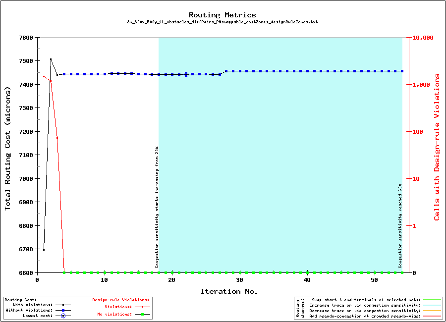

Pre-routing configuration

| Layer | Visibility |
|---|---|
| M3 | |
| V34 | |
| M4 |
Pre-routing configuration
|
Pre-routing configuration
|
||||||||||
|
|
|
|||||||||
|
Pre-routing configuration
|
| Routing metrics: |
|  |
| Aggregate routing cost, including lateral traces and vertical vias, and accounting for user-defined cost-zones. The vertical axis on the right shows the number of square cells involved with design-rule violations. Each cell is 1.00 by 1.00 microns in size, as defined by the 'grid_resolution' parameter in the input file. |